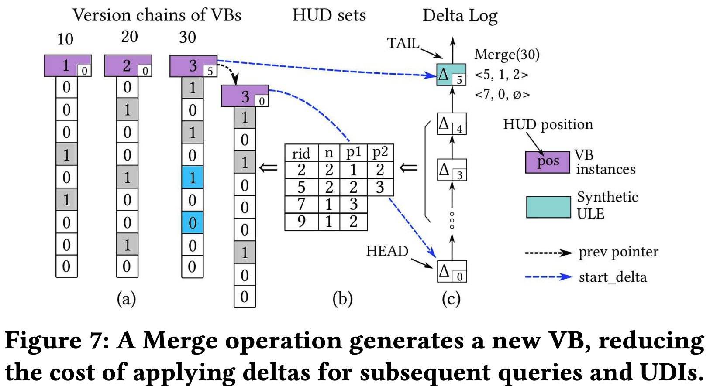

본 글은 논문 CUBIT: Concurrent Updatable Bitmap Indexing (VLDB'24) 를 읽고 정리한 글입니다.
별도의 명시가 없는 한, 본 글의 모든 그림은 위 논문에서 가져왔습니다.
목차
4.0. Prologue
4.0.1. API
- 기본적인 index API 를 모두 제공한다:
QUERY: Read operation.UPDATE: 모든 bitvector 를 읽어서 현재의 값을 알아내고, update 하려는 값으로 bit flip 을 하는 operation.DELETE: Bitmap Index 에서 해당 row 를 지우는 operation.INSERT: 모든 bitvector 의 맨 끝에 새로운 bit 를 추가하는 operation.
- 그리고 내부적으로 사용하는 management command 가 하나 있다:
MERGE: Out-of-place 로 누적된 log 들을 bitvector 에 합치는 operation.
- 이 모든 operation 들은 atomic 하게 구현되어 있다.
4.0.2. Forward Progress
- 모든
QUERYoperation 은 wait-free 이다.- 반면 기존의 tree-based index 는 UDI 가 read 를 blocking 하거나 restart 를 유도할 수도 있다는 점에서 더 효율적이다.
- 그리고, 두 가지 버전으로 구현해 놓았다.
- Write-write conflict 를 linearize 하기 위해 latch 를 사용하는 버전인 CUBIT-lk 과
- Latch-free 로 helping mechanism 을 사용하는 버전인 CUBIT-lf 가 있다고 한다.
4.1. Horizontal Update Delta (HUD)
- CUBIT 은 기존의 다른 bitmap index 처럼 column 의 각 distinct value 에 대해 모든 row 를 bit 에 대응시켜 existence 를 나타내는 value bitmap (VB) 를 사용하고, 이것은 RLE, WAH 등으로 encoding 된 상태로 유지된다.
- 그리고 UDI 를 할 때는, row-wise 로 어떤 row 가 어떤 value 에서 어떤 value 로 변경되었는지를 나타내는 자료구조인 Horizontal Update Delta (HUD) 를 사용하여 out-of-place 로 logging 해두고, 이것을 다시 VB 에 만영하는 것은 deferring 하는 방식이다.
- 따라서 이렇게 하면, UDI 를 처리할 때 직접 VB 혹은 다른 bitvector 를 수정하지 않기 때문에 비싼 decode-flip-encode cycle 작업을 할 필요도 없고 bitvector 전체에 대한 latch 를 잡을 필요도 없다.
- 이와 같은 특성 덕분에 기존의 bitmap index 에서의 문제인 contention 을 많이 줄일 수 있다.
4.1.1. Organization of HUD
- HUD 는 logical 하게는 bit-matrix 의 한 row 라고 생각하면 된다.
- 즉, target column 에 distinct value 가 10, 20, 30 이렇게 세개가 있다면, HUD 는 기본적으로 다음과 같이 초기화된다는 것.
10 20 30
+---+---+---+
HUD: | 0 | 0 | 0 |
+---+---+---+
- 이때, 값이 20 에서 10 으로 update 되었다면 이것에 대한 HUD 는:
10 20 30
+---+---+---+
HUD: | 1 | 1 | 0 |
+---+---+---+
- 가 된다.
- 이것만 보고 값이 20 에서 10 으로 update 된 것인지 10 에서 20 으로 update 된 것인지 어떻게 알 수 있냐 라고 생각할 수 있는데, 이것은 현재의 VB 로 알 수 있다.
- 가령 현재 값이 20 이었으므로 현재 20 에는 bit 가 1 로 켜져 있고, 10 에는 bit 가 0 으로 꺼져있게 되는데
- 이 HUD 의 bit 들을 XOR 하면 20 의 bit 는 다시 0 으로 꺼지게 되고, 10 의 bit 는 1 로 켜지게 되는 것.
- 즉, 이렇게 생성된 HUD 를 VB 에 on-demand 로 적용시켜가며 bitmap index read 를 하는 것이다.
- 보다시피, 대부분의 UDI case 에서는 bit 가 최대 2개만 켜지게 된다.
- Update 는 값을 바꾸는 것이기 때문에 2개가 켜지고,
- Delete 는 값을 삭제하는 것이기 때문에 현재의 값에 대한 bit 하나를 켜게 되며
- Insert 는 값을 추가하는 것이기 때문에 추가할 값 하나에 대한 bit 를 켜게 된다.
- 따라서, physical 하게는 HUD 는 다음과 같이 표현된다.
<row_id, n_bits, pos_0, pos_1, ...>
- 여기서
row_id는 이 HUD 에 대한 row ID 이고n_bits는 몇개의 bit 가 이 HUD 에 있는지 (일반적으로는 최대 2),pos_0,pos_1, … 는 각 bit 들의 position 이다 (이것도 일반적으로는 최대pos_1까지).
- 위에서의 예시를 HUD 표현으로 바꿔보면 (row ID 가 2 이라고 가정)
<2, 2, 1, 2>
- 가 되는 것이다.
4.1.2. Benefits

- 위 그림에서 보이는 것 처럼 HUD 는 delta log 에 out-of-place 로 쭉 쌓이게 되는데, 이 delta log 를 쭉 읽어서 HUD set 을 구하게 되면 그것이 snapshot 이 되는 셈이다.
- 따라서 UDI 를 할 때 VB 를 변경하느라 decode-flip-encode 를 할 필요도 없고, UDI 를 하는 와중에도 read 가 latch 를 잡을 필요가 없다.
4.1.3. HUD Has Small Size
- 위에서 말한 것 처럼, HUD 는 보통 bit 가 최대 2 개 켜지기 때문에 사이즈가 아주 작다.
- 그리고 아주 드문 경우에 더 많은 bit 가 켜지기도 한다고 한다 1.
4.2. Delta Log
- 그럼 이 delta log 에 대해 좀 더 자세히 알아보자.
- 별로 어려울 것은 없다. 각 HUD 는 UDI Log Entry (ULE) 라는 이름의 linked list entry 에 담겨 Delta Log 라는 linked list 로 관리된다.
- 그리고 이 ULE 에는 monotonic 하게 증가하는 commit timestamp (commit-ts) 가 명시되고, 이것을 이용해 delta log 에서 snapshot 을 뽑아낼 수 있는 것이다.
- 사소한 detail 들을 좀 알아보면,
- 이 list 에는 HEAD 와 TAIL pointer 가 있어서 list 의 시작과 끝을 가리키고, HEAD 에서부터 TAIL 까지 ULE 의 commit-ts 는 계속 증가하도록 유지된다.
- 그리고 list 에는 처음에 비어있는 ULE 를 넣어서 항상 list 가 비지 않게 관리한다고 한다. 이것은 그냥 구현/관리상의 편의인듯.
- 이렇게 함으로써 bitmap index 의 UDI 가 단순히 linked list append 로 바뀌기 때문에 critical section 이 크게 짧아지게 된다.
4.2.1. Example
- 위의 figure 6 을 보면 이해가 될텐데,
- Figure 6-b 을 간단히 설명해 보면 timestamp = 1 로 delta log 를 traverse 했을 때의 결과가 6-b 의 아래쪽 HUD set 이고, timestamp = 4 로 delta log 를 traverse 했을 때의 결과가 위쪽 HUD set 이다.
- 이렇듯 어떤 timestamp range 를 가지고 이 delta log 를 traverse 하냐에 따라 서로 다른 snapshot 을 가지게 되고, 따라서 각기 다른 version 의 bitmap index 를 바라보게 되는 것이다.
4.3. Merging HUDs to VBs

- 이러한 delta list 가 있다면 당연히 어떻게 이들을 consolidate 하여 원본의 VB 에 적용시킬까가 문제가 된다.
- CUBIT 에서는 이것을 지원하기 위해 VB 도 multi-versioning 으로 관리한다.
4.3.1. Multi-Versioning VBs
- 우선 target column 의 각 distinct value 에 대한 VB 들 또한 list 로 관리된다.
- 즉, 하나의 distinct value 당 하나의 VB instance list 가 있다고 생각하면 된다.
- CUBIT 의 background maintenance thread 는 merge 하려는 VB 에 대해 private copy 를 뜨고, read 할 때 처럼 이 thread 가 발급받은 start-ts 로 delta log 를 traverse 하여 HUD set 을 만든 뒤, 이 HUD set 을 VB private copy 에 적용한다.
- 그리고 이것을 새로운 VB 로써 VB instance list 에 추가한다.
- 이때, VB instance list entry 에는 어떤 내용이 들어가나 알아보자.
- 우선 다른 UDI 와 마찬가지로 commit-ts 가 적힌다.
- 그리고 이 VB instance 의 이전 버전을 가리키는
prevpointer 도 갖고 있으며 - 이 VB instance 를 instance list 에 추가할 때 다른 UDI 처럼
MERGEoperation 에 대한 ULE 를 delta log 에 추가하는데, 이 ULE 를 가리키는start_delta도 VB instance list entry 에 적어준다.
- 이렇게 하면, bitmap index 를 read 할 때는 이렇게 하면 된다.
- 우선 자신의 timestamp 로 VB instance list 를 traverse 하면서 VB instance list entry 에 적힌 commit-ts 로 자신이 읽을 수 있는 VB instance set 을 만든다.
- 즉, 만약 어떤 VB instance 를 봤는데 commit-ts 가 자신의 것보다 크다면, 이것을 읽지 않고
prev로 이전 version 으로 traverse 하는 것. - 만약 commit-ts 가 자신의 것보다 작다면, 이것이 내가 읽어야 하는 VB instance 가 된다: 당연히 이놈 이후의 (
prev로 연결된) 다른 VB instance 는 이 commit-ts 보다 더 작으므로, 조건을 만족하는 첫번째 놈이 내가 읽을 수 있는 가장 최신의 것이 되는 것이다.
- 즉, 만약 어떤 VB instance 를 봤는데 commit-ts 가 자신의 것보다 크다면, 이것을 읽지 않고
- 이 VB instance 에 대해,
start_delta가 가리키는 ULE 로 넘어가서 여기서부터 delta log traverse 를 하며 HUD set 을 만들어 나가면 되는 것이다.
- 우선 자신의 timestamp 로 VB instance list 를 traverse 하면서 VB instance list entry 에 적힌 commit-ts 로 자신이 읽을 수 있는 VB instance set 을 만든다.
- 즉, 이렇게 HUD set 을 새로운 VB instance 에 merge 하고 이놈에 대한 ULE 를 적어줌으로써 traverse 해야 할 delta log 의 양을 줄이게 되는 것이다.
4.3.2. Synthetic ULE
- 하나의 VB 를 merge 한 뒤에는, 적용된 HUD 들은 correctness 를 위해 좀 수정되어야 할 필요가 있다 2.
- Update 를 생각해 보면, 값이 바뀌는 것이기 때문에 HUD 는 VB 두개가 수정되는 연산을 의미하게 된다.
- 하지만 VB merge 를 하면 하나의 VB 만 수정한 것이기에, 수정되지 않은 나머지 하나에 대해서도 고려를 해줘야 한다는 것.
- 하지만 이미 delta log 에 들어있는 ULE 를 직접 수정하는 것은 (아무래도 in-place update 이기 때문에) concurrency 의 측면에서 너무 복잡하다.
- 그래서 이들을
MERGEoperation 에 대한 ULE 에 적어주게 되는데, 이것을 Synthetic ULE 라고 한다.- 위의 예시를 통해 설명해 보면,
- Value 30 에 대한 VB 에 대해
MERGE를 했기 때문에 여기에 apply 되는 HUD 는<row_id=5, n_bits=2, pos=2, pos=3>이랑<row_id=7, n_bits=1, pos=3>이다. - 그럼 HUD
<row_id=5, n_bits=2, pos=2, pos=3>에서pos=3이 apply 된 것이기 때문에,pos=2는 아직 반영되지 않은 상태인 것. - 따라서 이놈을 Synthetic ULE 의 HUD 에
<row_id=5, n_bits=1, pos=2>로 적어주는 것이다.
4.4. Segmented Bitvectors
- CUBIT 에서는 각 bitvector 를 고정 개수의 bit 들을 담는 단위인 segment 로 나누고, 이 segment 각각에 대해 encoding 을 하여 관리하는 방법을 취한다.
4.4.1. Benefits
- 이렇게 하면 좋은점이 있다:
- 우선, defer 되긴 했지만 결국에는 이 HUD 를 apply 하느라 decode-flip-encode 를 해야 하는데, 이렇게 segment 단위로 쪼개놓으면 원하는 segment 에 대해서만 decode-flip-encode 를 하면 되기 때문에 이 decode-flip-encode cycle 의 비용을 한정지을 수 있다.
- 또한, 모든 VB 들에 대해 동일한 개수의 segment 로 나뉘어지기 때문에 다른 VB 들 간의 bitwise operation 도 수월해진다: 여러 VB 에 대해서 원하는 row 가 있는 segment 들 끼리만 bitwise operation 을 하면 되기 때문.
4.5. Snapshotting
- Snapshotting 을 위해서는 하나의 global timstamp variable 이 사용되고, 이 것은 두가지의 용도로 사용된다.
- start-ts: 이것은 모든 operation 이 처음 시작할 때 global timestamp 로부터 읽어들인 값이다.
- commit-ts: 이것은 UDI 혹은
MERGE했을 때 증가하는 값으로, ULE 혹은 VB instance list entry 에 적히는 값이다.
4.5.1. Multi-Versioning HUD Sets
- Bitmap index 을 읽을 때는
- Delta log HEAD 에서부터 시작해 자신의 start-ts 보다 commit-ts 가 큰 ULE 가 나올 때 까지 delta log 를 traverse 한 뒤
- 이 ULE 에 적힌 HUD 들을 모두 모아 HUD set 을 만들게 된다.
- 이때, 만약 동일한 row 에 대한 HUD 가 서로 다른 ULE 에서 등장하게 된다면, 당연히 가장 최신 것을 봐야 하므로 ULE 의 commit-ts 가 더 높은 놈을 취한다.
- 이 과정은 당연히 delta log 가 짧을 수록 더 빨라지므로, 4.3 에서 설명한 merge 로써 이 과정을 가속시킬 수 있다.
4.5.2. Applying HUD Sets
- 위 과정을 통해 얻어낸 HUD set 을 VB 에 적용하면, 해당 HUD set 을 snapshot 으로 하는 bitmap index 가 탄생하게 된다.
- 즉, 다른 start-ts 를 가진 두 worker 는 delta log traversal 을 하며 서로 다른 HUD set 을 가지게 될 것이고, 따라서 서로 다른 bitmap index version 을 바라보게 된다.
- 만약 HUD set 이 너무 크다면, HUD set 을 row ID 기준으로 정렬해서 VB 의 segment 별로 HUD 를 뿌리고, 여러 thread 들을 spawn 해서 HUD set apply 를 수행한다고 한다.
4.6. Index Operations
4.6.1. Queries
- Read query 가 어떻게 원하는 값 에 대해 이 bitmap index 를 읽는지 정리해 보자.
- 우선 global timestamp 를 읽어 start-ts 를 결정한다 (
Q.start_ts). - 그리고 에 대한 VB instance list 를 traverse 하면서,
Q.start_ts보다 작거나 같은 commit-ts 를 갖는 첫번째 VB instance 를 결정한다 (이놈의 commit-ts 를V.commit_ts라고 하자). - 이놈의 start-delta pointer (
V.start_delta) 를 따라서 delta log 에 진입한다. - 여기서부터 delta log 를 traverse 하면서
Q.start_ts보다 큰 commit-ts 를 갖는 ULE 가 나올 때까지 간다.- 이때 ULE 의 HUD 들을 모두 모으며 HUD set 을 만든다. 만약 에 대한 HUD 가 아니라면, 무시한다.
- 이렇게 결정된 HUD set 이 존재한다면 (즉, 비어있지 않다면) 이 HUD set 을 private copy 된 VB 에 적용한다.
- 이 과정에서 가 segmentation 되어 있다면, 각 segment 에 대한 HUD apply 를 여러 thread 를 이용해 parallel 하게 수행한다.
- 이 parallel HUD apply 는 서로 blocking 하는 것이 없기 때문에, 당연히 linear scaling 이 가능하다. 즉, thread 개수에 비례해 성능이 올라가는 것.
- 만약 HUD set 의 크기가 일정 threshold 를 넘는다면, HUD set 이 적용된 private copy 를 CUBIT background maintenance thread 에게 넘겨서
MERGE를 수행한다.- 즉, 이렇게 함으로써 background thread 가 merge 할 필요 없이 이미 merge 가 완료된 bitvector 를 VB instance list 에 넣을 수 있게 하는 것.
4.6.2. UDIs
- UDI 에 대해서는 어떻게 처리하는지 보자.
- 우선 Update 와 Delete 에 대해서는 기존의 값이 무엇인지 알아야 하기 때문에, query 에서와 마찬가지로 start-ts 를 발급받아 모든 value 에 대한 VB 를 읽는다.
- 각 VB 를 읽는 것은 4.6.1 의 전 과정과 동일하다.
- 다만, 이때는 읽어야 할 VB 가 많기 때문에, 전체 distinct value 들을 특정 range 로 묶어서 각 range 를 한 thread 가 담당하는 식으로 parallelize 한다.
- 당연히 insert 를 할 때는 기존의 값을 몰라도 되기 때문에 이 과정을 하지 않는다.
- 그리고 ULE 를 생성하며 (logical) bit flip 을 진행한다.
- Update 의 경우에는 기존의 값과 새로운 값에 모두 bit 를 올린 HUD 를 ULE 에 담고
- Delete 의 경우에는 기존의 값에 bit 을 올린 HUD 를 ULE 에 담고
- Insert 의 경우에는 새로운 값에 bit 을 올리고 row ID 를 하나 올린 HUD 를 ULE 에 담는다.
- 마지막으로 이렇게 생성된 ULE 를 delta log 에 넣으며 마무리된다.
4.7. Synchronization Mechanisms
- 이렇게 하면 일단 UDI 와 read (query) 간의 blocking 은 없어 보인다.
- 하지만 UDI-UDI 간의 conflict 는 막아야 하는데, 이것을 어떻게 하는지 알아보자.
- 이것을 막아야 하는 이유는 간단하다: UDI 들은 각자의 start-ts 를 갖고 있고, 따라서 서로 다른 bitmap index version 을 바라보고 있기 때문에 inconsistency 가 생기기 때문.
- 즉, 내가 시작한 다음에 내가 update 하려는 놈을 누군가가 먼저 update 해놓았다면, 내 update 로 이 update 를 overwrite 하면 안되기 때문이다.
- 이를 위한 첫번째 접근은 다음과 같다 (CUBIT-lk).
- 우선 global latch 를 두고, ULE 를 delta log 에 추가하기 전에 이놈을 먼저 잡는다.
- 잡고 나서는 내 start-ts 와 TAIL 의 commit-ts 사이에 있는 ULE 들을 쭉 훑으며 내가 추가하려는 HUD 의 row ID 가 이미 추가되어 있는지 확인한다.
- 만약 추가되어 있다면, latch 를 놓고 처음부터 (새로운 start-ts) 다시 시작한다.
- 만약 추가되어 있지 않다면, global timestamp 를 하나 증가시킨 뒤, 이 timestamp 값을 ULE 의 commit-ts 에 적어서 ULE 를 delta log 에 추가한 다음 latch 를 놓는다.
- 이 시점에서 이 ULE 가 global 하게 visible 해지는 것이다.
4.7.1. Overhead
- 일단 보다시피 read query 는 latch 를 아예 잡지 않는다.
- UDI 에 대해서는 비록 global latch 를 잡기는 하지만, delta log 를 읽고 ULE 를 추가하는 작업밖에 하지 않기 때문에 bitvector 단위로 latch 를 잡아 decode-flip-encode 를 하는 것에 비해 critical section 시간이 훨씬 짧다고 한다.
- 따라서 뒤의 evaluation 에서 확인할 수 있듯이, 이 CUBIT-lk 로도 다른 baseline 에 비해 훨씬 덜한 contention 과 tail latency 를 달성할 수 있다.
4.7.2. Optimizations
- 하지만 skewness 가 큰 경우에는 그럼에도 불구하고 contention 이 매우 큰데, 이를 해결하기 위한 방법 (CUBIT-lf) 을 알아보자.
4.7.2.1. Consolidation Array
- 일단 Consolidation Array 라는 기법을 사용하는데, 이것은 만약 UDI conflict 가 난다면 HUD 를 합쳐서 하나의 ULE 에 넣는다는 것이다 3.
4.7.2.2. Making CUBIT Latch-Free
- 여기서의 아이디어는 helping-mechanism 이다.
- 즉, CAS 를 통해 delta log 에 ULE 를 append 해보고, 실패하면 (내가 한발 늦었다는 것이기 때문에) 현재의 tail 에 있는 ULE 가 끝나도록 도와준다.
- 이를 위해서는 ULE 를 delta log 에 추가하기 전에, 이 작업이 어떤 것인지를 다른 worker 도 알 수 있게 하기 위해 ULE 에 적어둔다.
- 가령 뭐 value 를 10 에서 20 으로 바꾸는 작업이랄지 그런것들
- 그럼 CAS 가 실패하면, tail ULE 에 접근해서 이놈이 어떤 작업인지를 확인하고, 이 작업이 빨리 끝날 수 있도록 도와주는 식으로 수행된다.
- 즉, 즉석으로 parallel worker 로 편입되는 것; 가령 update 전에 모든 VB 를 읽어야 하는 작업에 투입되는 등.
- 더 자세한 과정은 잘 모르겠다 1.
- 이를 위해서는 ULE 를 delta log 에 추가하기 전에, 이 작업이 어떤 것인지를 다른 worker 도 알 수 있게 하기 위해 ULE 에 적어둔다.
- 그리고 도와준 다음에 retry 하는 식으로 이루어 진다.
- 이렇게 하면 blocking 된 놈이 마냥 busy-wait 하는게 아니기 때문에 ULE 를 추가하는 작업의 시간이 더욱 짧아지고, 따라서 contention 도 줄어들게 된다.
Footnotes
-
더 긴 버전의 논문 에 있다고 한다. ↩ ↩2
-
논리적으로 그렇긴 하지만, 굳이 필요한가 라는 생각이 든다. 어차피 merge 되지 않은 VB 는 delta log 에서 더 옛날의 ULE 부터 읽어나갈 텐데, 그럼 이런 synthetic ule 없이도 정확하게 읽을 수 있는 것 아닌가. ↩
-
코드를 확인해봐야 할 듯; 어떻게 합쳐서 누구의 ULE 에 넣는 것인지 ↩